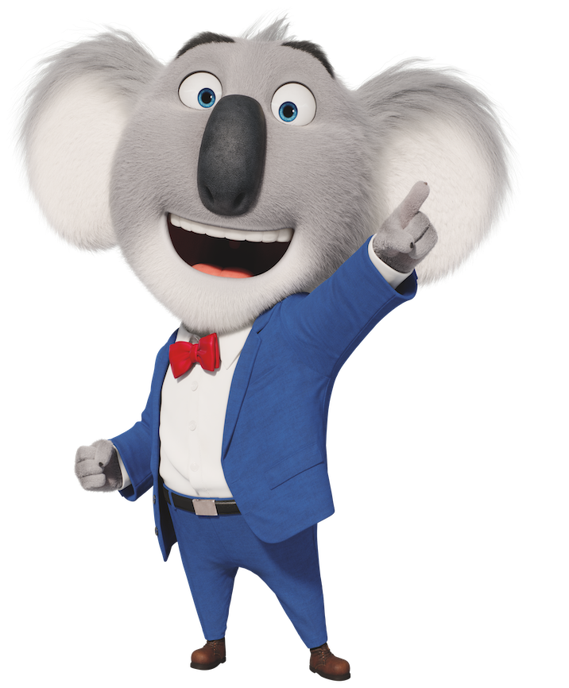
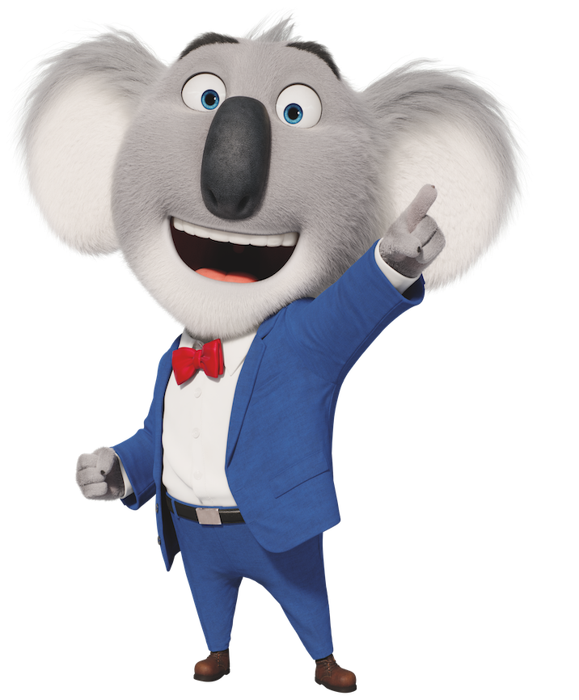

Sing 2 is a 2021 American computer-animated jukebox musical comedy film produced by Illumination and distributed by Universal Pictures. It is the sequel to Sing (2016), and was written and directed by Garth Jennings and co-directed by Christophe Lourdelet. The film stars an ensemble cast consisting of Matthew McConaughey, Reese Witherspoon, Scarlett Johansson, Taron Egerton, Tori Kelly, Nick Kroll, Jennings, Peter Serafinowicz, Jennifer Saunders, and Nick Offerman, reprising their roles from the first film. The sequel also features new characters voiced by Bobby Cannavale, Spike Jonze, Pharrell Williams, Halsey, Chelsea Peretti, Letitia Wright, Eric André, Adam Buxton, and Bono. Like the previous film, Sing 2 features songs from many artists, most of which are performed diegetically. The story is set after the events of the previous film, where Buster Moon and his group put on a show in Redshore City while working to impress an entertainment mogul and enlist a reclusive rock star to perform.

Following the success of his talent show at the New Moon Theatre, Buster (McConaughey) looks to take things a step further by putting on a huge show at the prestigious Crystal Tower Theatre in the glamorous Red Shore City. With no business connections and only hopes and dreams to run on, Buster pitches the outlandish idea to mogul wolf Jimmy Crystal. With Gunter's spur-of-the-moment help, Buster plans a big show featuring the return of reclusive rock legend Clay Calloway. The star hasn't been seen since his wife's death over a decade prior. The only problem with this plan is that Buster has never met Clay, and Jimmy is not a man who likes to be lied to. So, with only three weeks to put the big show together, the gang of musically inclined animals must find Clay and convince him to join the show, all while dealing with Jimmy's demands and watchful eye.

If there wasn't enough pressure to this task, Jimmy crystal is revealed to be something of a gangster type, meaning that there is more at stake for Buster than he realized when he pitched his idea. On top of that, he inserts his daughter Porcha to lead the show, taking Rosita's spot, much to her dismay. They are not even sure if they can get Clay to come out of retirement, making their task all the more desperate. But just like the last film, fans will experience the true power of music. What begins as big-time dreams will show how music can heal even the most broken of hearts.

This cartoon is uplifting and impressive to me. I love all the background music in this cartoon movie. I learned that we should always have a positive attitude when pursing our dreams. Be brave and confident!
 

“Sing 2.” Wikipedia, Wikimedia Foundation, 8 Feb. 2022, https://en.wikipedia.org/wiki/Sing_2.
Mayes, Dakota, and Dakota Mayes. “Sing 2: Cast, Plot & Everything Else We Know.” MovieWeb, 20 Dec. 2021, https://movieweb.com/sing-2-cast-plot-what-to-expect-illumination/